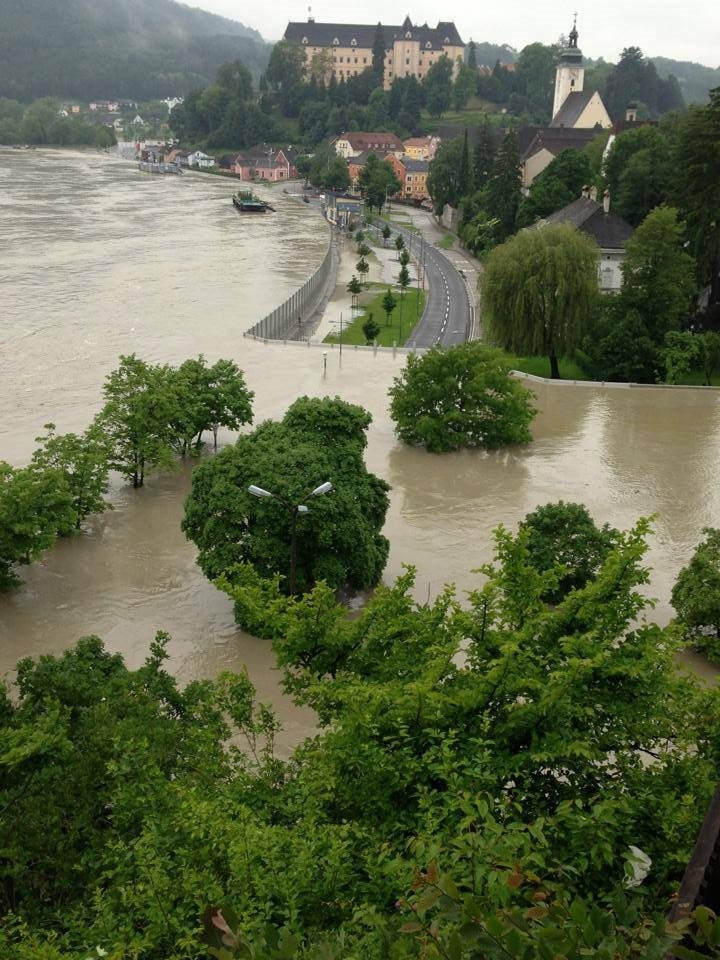

COMMUNITY HEALTH CENTER DISASTER RESPONSE PROGRAM
HOME
MITIGATION
PREPARATIONS
RESPONSE
RECOVERY
REFERENCE
MITIGATION
In the Philippines, Bagong Ilog, Pasig is included in the top ten flood-prone areas in Metro Manila. It is not new,
in Metro Manila, that continuous pouring of heavy rains, would cause floods. Pasig Community Health Care Center, though it caters to a lot of
residences in Pasig city, is unfortunately located in Bagong Ilog, Pasig. The most popular mitigation technique is to avoid building infrastructures
near flood- prone areas. Most of the time, the geographical location where the building would be built should be considered or planned carefully.
However, in cases like these, where it is impossible to move the infrastructure, you can consider using the available controllable resources.
Example: Controllable resources available: Construction materials
Since Pasig Community Health Care Center is located in a flood-prone area, the community can use these construction materials to build a flood wall:
a. Along the river

b. Around the Hospital
Existing Plans and Policies
1. If there is an occurrence of a strong typhoon, similar to Typhoon Yolanda, the plan is to settle in the basement to avoid the strong winds.
2. Emphasize engineering construction for disaster prevention
Additional Plans and Policies if there would be an occurrence of a Storm Surge. Water will travel to the lowest available point so staying in the basement, which will most likely flood is not the best idea. During this time, the people can gather on the upper floors.